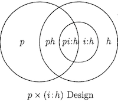
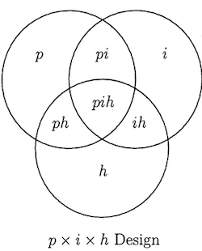
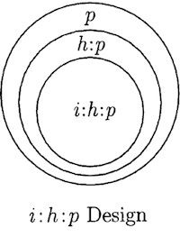

Reliability asks how accurately observed score measures reflect their true score, whereas generalizability asks how accurately we can generalize a measurement to a universe of (predefined) situations.
The cost, however, is added complexity. GT comes with A LOT of theoretical and statistical complexity compared to CTT.
A measurement system is a set of interrelated elements that act together to produce a measurement. Unlike CTT, which largely focuses on designing a singular measure (i.e. scale), GT focuses on designing a measurement system with the following elements:
A small organization wants to work with you to develop a performance evaluation tool and give you free reign to design a study to evaluate its generalizability. You work with job incumbents and SMEs to develop an initial 10 item scale that measures an employee’s task performance. This tool is designed to be used by an evaluator to rate an employee’s performance. You get a sample of 100 employees and 10 evaluators to rate each employee.
The object of measurement is the object in a measurement system that is being assigned scores (measurements). It is the object we are trying to differentiate among. In most behavioral and social science applications this will be persons.
Symmetry of Generalizability Theory states that any object (facet) in a measurement system can be the object of measurement (Cardinet et al., 1976). It is up to the researcher to determine this.
In our example, the object of measurement is the employee.
| 1 | 2 | 3 | 4 | 5 | 6 | 7 | 8 | 9 | 10 |
|---|---|---|---|---|---|---|---|---|---|
| 1000 | 1000 | 1000 | 1000 | 1000 | 1000 | 1000 | 1000 | 1000 | 1000 |
| 1 | 2 | 3 | 4 | 5 | 6 | 7 | 8 | 9 | 10 |
|---|---|---|---|---|---|---|---|---|---|
| 1000 | 1000 | 1000 | 1000 | 1000 | 1000 | 1000 | 1000 | 1000 | 1000 |
, , RESP_ID = 1
ITEM_ID
RATER_ID 1 2 3 4 5 6 7 8 9 10
1 1 1 1 1 1 1 1 1 1 1
2 1 1 1 1 1 1 1 1 1 1
3 1 1 1 1 1 1 1 1 1 1
4 1 1 1 1 1 1 1 1 1 1
5 1 1 1 1 1 1 1 1 1 1
6 1 1 1 1 1 1 1 1 1 1
7 1 1 1 1 1 1 1 1 1 1
8 1 1 1 1 1 1 1 1 1 1
9 1 1 1 1 1 1 1 1 1 1
10 1 1 1 1 1 1 1 1 1 1, , RESP_ID = 2
ITEM_ID
RATER_ID 1 2 3 4 5 6 7 8 9 10
1 1 1 1 1 1 1 1 1 1 1
2 1 1 1 1 1 1 1 1 1 1
3 1 1 1 1 1 1 1 1 1 1
4 1 1 1 1 1 1 1 1 1 1
5 1 1 1 1 1 1 1 1 1 1
6 1 1 1 1 1 1 1 1 1 1
7 1 1 1 1 1 1 1 1 1 1
8 1 1 1 1 1 1 1 1 1 1
9 1 1 1 1 1 1 1 1 1 1
10 1 1 1 1 1 1 1 1 1 1\[\begin{align} X_{pir} & = \mu \;\; \text{(Grand Mean)}\\ & + \mu_{p}-\mu \;\; \text{(Person Effect)}\\ & + \mu_{i}-\mu \;\; \text{(Item Effect)}\\ & + \mu_{r}-\mu \;\; \text{(Rater Effect)}\\ & + \mu_{pi}-\mu_{p}-\mu{i}+\mu \;\; \text{(Person x Item Effect)}\\ & + \mu_{pr}-\mu_{p}-\mu{r}+\mu \;\; \text{(Person x Rater Effect)}\\ & + \mu_{ir}-\mu_{i}-\mu{r}+\mu \;\; \text{(Item x Rater Effect)}\\ & + X_{pir} - \mu_{pi} - \mu_{pr} - \mu_{ir} + \mu_{p} + \mu_{r} + \mu_{i} - \mu \;\; \text{(Residual)} \end{align}\]
\[\begin{align} X_{pir} & = \mu \;\; \text{(Grand Mean)}\\ & + \nu_{p} \;\; \text{(Person Effect)}\\ & + \nu_{i} \;\; \text{(Item Effect)}\\ & + \nu_{r} \;\; \text{(Rater Effect)}\\ & + \nu_{pi} \;\; \text{(Person x Item Effect)}\\ & + \nu_{pr} \;\; \text{(Person x Rater Effect)}\\ & + \nu_{ir} \;\; \text{(Item x Rater Effect)}\\ & + e_{pir} \;\; \text{(Residual)} \end{align}\]
\[\sigma^2_{X_{pir}}=\sigma^2_{p}+\sigma^2_{i}+\sigma^2_{r}+\sigma^2_{pi}+\sigma^2_{pr}+\sigma^2_{ir}+\sigma^2_{e}\]



A Generalizability Study is a study focused on designing a specific measurement system.
The main focus of a G-Study is to accurately estimate all of the variance components associated with the object of measurement and measurement facets. These estimates can then be used to inform future studies.
G-Studies are most informative when the measurement design is fully crossed and all the measurement facets are considered random as this allows one to estimate variance components that contribute to measurement error.
In a G-Study, objects of measurements are assumed to be drawn from a larger population and random measurement facets are assumed to be drawn from a universe of admissible observations (UAO).
The researcher defines the UAO by selecting the measurement facets that make up the G-Study and defining the admissible conditions of the measurement facet (e.g. only items that measure task performance).
Each person (object of measurement) has a universe score which is defined as the expectation taken over the entire universe of admissible observations. We can estimate the universe score with the person mean, \(\mu_{p}\). This is similar to the true score in CTT.
Universe score variance, \(\sigma^2_{p}\), is the variance of universe scores over all people in the population. It is similar to true score variance and it describes the extent to which people vary because of differences in the attribute being measured.
GT also differs from CTT in another important way: it allows one to investigate the impacts of both relative error and absolute error .
Relative Error: Error that causes the rankings of individuals to differ across conditions within the same facet (e.g. receiving a high rating from one rater and a low rating from another). It is the sum of all of the variance components that involve an interaction with the object of measurement.
Absolute Error: Error that causes the object of measurement’s observed score to differ from its universe score. It is the sum of all of the variance components except the universe score variance component.
\[\sigma^2_{rel}=\sigma^2_{pi}+\sigma^2_{pr}+\sigma^2_{ir}+\sigma^2_{e}\]
\[\sigma^2_{abs}=\sigma^2_{i}+\sigma^2_{r}+\sigma^2_{pi}+\sigma^2_{pr}+\sigma^2_{ir}+\sigma^2_{e}\]
RESP_ID, ITEM_ID, and RATER_ID.lmer function from the lme4 package. The lmer function estimates a mixed-effects regression model (multilevel models are a special case of mixed-effect models).Linear mixed model fit by REML ['lmerMod']
Formula: RESPONSE ~ 1 + (1 | RESP_ID) + (1 | ITEM_ID) + (1 | RATER_ID) +
(1 | RESP_ID:ITEM_ID) + (1 | RESP_ID:RATER_ID) + (1 | ITEM_ID:RATER_ID)
Data: data_e2
REML criterion at convergence: 52262.2
Scaled residuals:
Min 1Q Median 3Q Max
-3.7653 -0.6106 0.0001 0.6208 3.5007
Random effects:
Groups Name Variance Std.Dev.
RESP_ID:RATER_ID (Intercept) 18.998 4.359
RESP_ID:ITEM_ID (Intercept) 4.529 2.128
ITEM_ID:RATER_ID (Intercept) 3.318 1.821
RESP_ID (Intercept) 16.370 4.046
RATER_ID (Intercept) 7.666 2.769
ITEM_ID (Intercept) 3.303 1.817
Residual 5.945 2.438
Number of obs: 10000, groups:
RESP_ID:RATER_ID, 1000; RESP_ID:ITEM_ID, 1000; ITEM_ID:RATER_ID, 100; RESP_ID, 100; RATER_ID, 10; ITEM_ID, 10
Fixed effects:
Estimate Std. Error t value
(Intercept) 3.295 1.148 2.87# A tibble: 7 × 3
VAR_COMP_NAME VAR_COMP VAR_COMP_PROP
<chr> <dbl> <dbl>
1 RESP_ID:RATER_ID 19.0 0.316
2 RESP_ID 16.4 0.272
3 RATER_ID 7.67 0.127
4 Residual 5.94 0.099
5 RESP_ID:ITEM_ID 4.53 0.075
6 ITEM_ID:RATER_ID 3.32 0.055
7 ITEM_ID 3.30 0.055The universe of generalization is defined by the researcher as the conditions of a measurement facet that one wishes to generalize across.
The universe of generalization is the D-Study equivalent of the UAO and in many cases will be equivalent to the UAO. However, researchers may decide to define the universe of generalization by making changes to the UAO:
\[\rho^2=\frac{\sigma^2_{p}}{\sigma^2_{p}+\frac{\sigma^2_{pi}}{n_{i}'}+\frac{\sigma^2_{pr}}{n_{r}'}+\frac{\sigma^2_{e}}{n_{i}'n_{r}'}}\]
\[\Phi=\frac{\sigma^2_{p}}{\sigma^2_{p}+\frac{\sigma^2_{i}}{n_{i}'} + \frac{\sigma^2_{r}}{n_{r}'}+\frac{\sigma^2_{pi}}{n_{i}'}+\frac{\sigma^2_{pr}}{n_{r}'}+\frac{\sigma^2_{e}}{n_{i}'n_{r}'}}\]
Conceptually, a fixed facet is one where the sampled conditions exhaust the universe. That is, perhaps the 10 raters in our study are the only raters who will ever be providing ratings in this measurement system and thus we do not need to generalize to a larger universe of raters.
Mathematically, when we fix a facet, we are effectively averaging over it and redistributing its variance elsewhere.
This is GT’s explanation of the Reliability-Validity Paradox (Kane, 1982).
\[\sigma^2_{p*}=\sigma^2_p + \frac{\sigma^2_{pr}}{n_r}\]
\[\sigma^2_{i*}=\sigma^2_i + \frac{\sigma^2_{ri}}{n_r}\]
\[\sigma^2_{e*}=\sigma^2_{pi}+\frac{\sigma^2_e}{n_r}\]
If there are some kind of constraints for a facet, then there are instances where it makes sense to nest it. In our example, 10 raters each rating all 100 employees may not actually be feasible. It might make sense to nest raters within employees and have each rater rate 10 employees.
As a result, however, we could no longer estimate \(\sigma^2_{r}\) or \(\sigma^2_{pr}\) separate from one another.